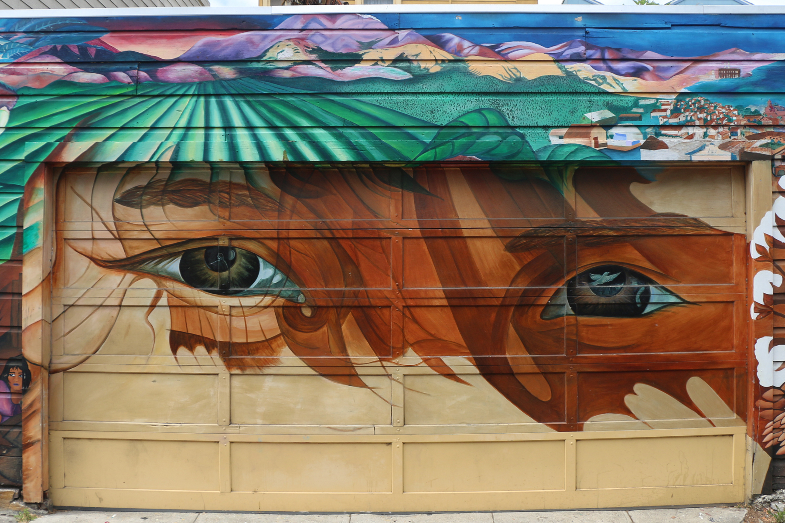
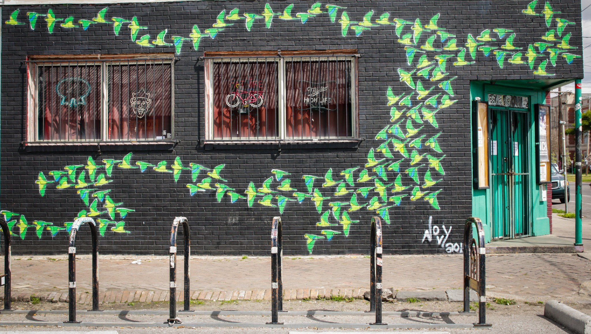

Artistreet - Street Art Near You
A site that finds street art near you.
Artistreet aims to help low-income students and families locate and enjoy street art near them. Street art is a wonderful, and free, way to immerse yourself in your community and learn more about the dreams of the people and issues in it.